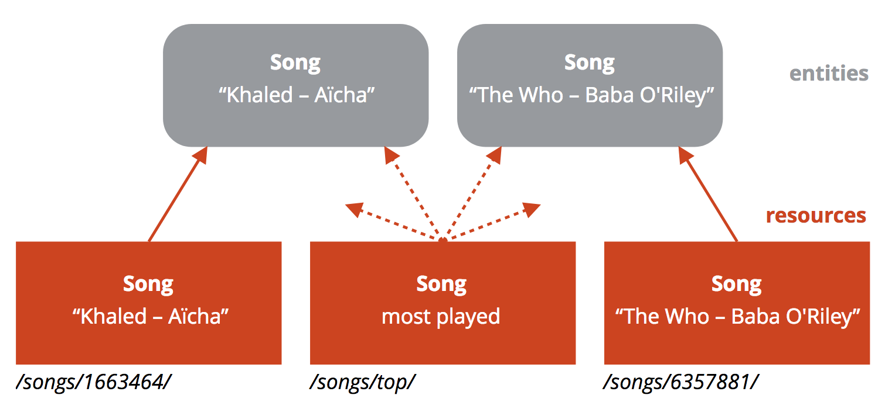
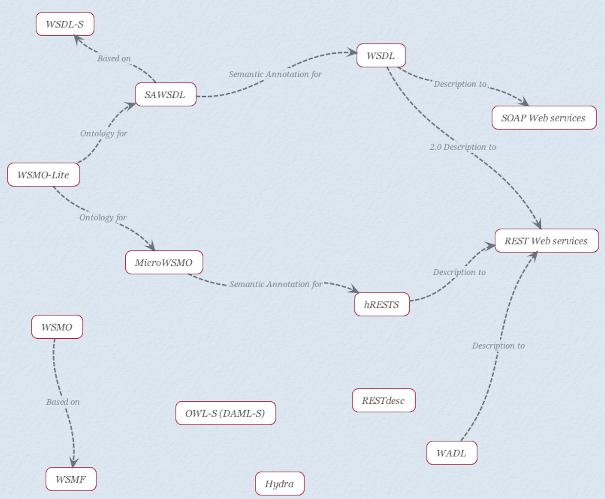
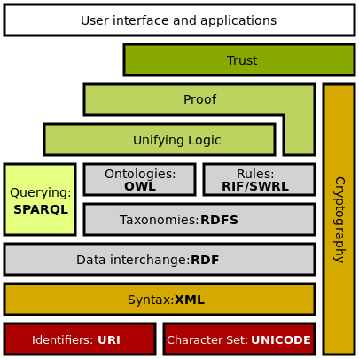
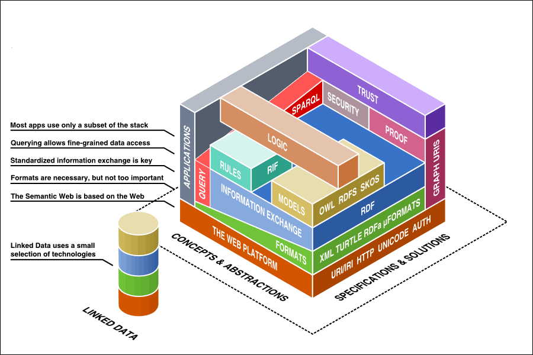
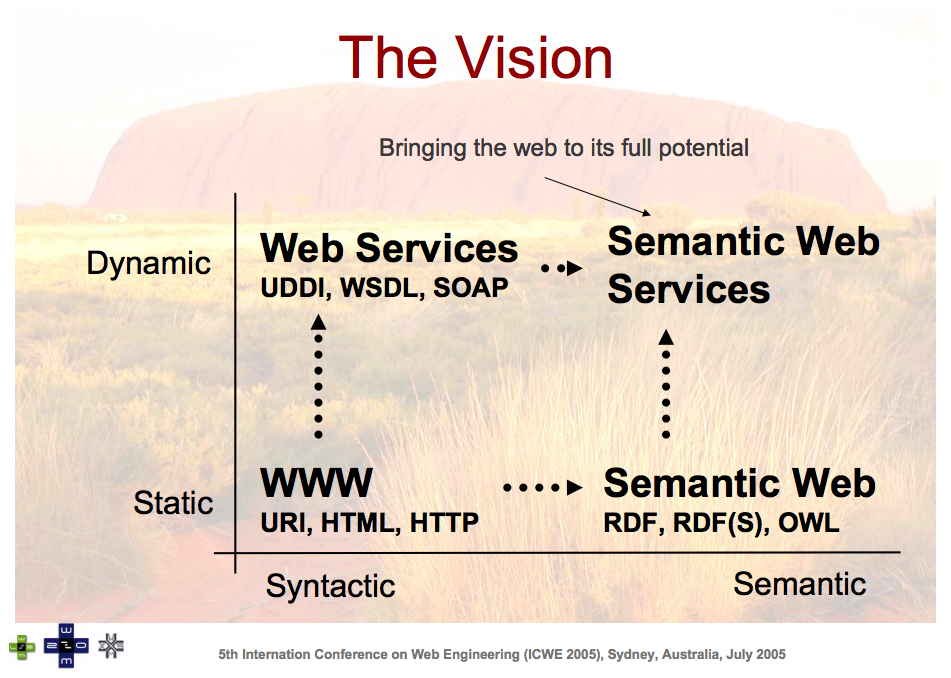

Some notions
Typically, the term “Web services” is used to label the older, XML-based interfaces on top of HTTP.
The term “Web APIs” is more fashionable for interfaces that use HTTP and JSON.
But in my texts, “Web services” means anything you can operate on the Web, which include the Web APIs.
1 REST
REST is an architectural style of network-based software architecture. The mostly mentioned REST style service/API (or other names) is the Web implementation of the REST. The text here only talks about the Web implementation.
REST services/APIs are Web based systems that
- build upon HTTP and URL,
- follow a set of constraints,
- to serve information in different representations like HTML, JSON, XML, MP3, etc.
Resource is the unit of information that identified by an URL and being transferred via HTTP between clients and services in the REST architectural system. An URL points to only 1 resource, a resource may be identified by more than 1 URLs.

Self-claimed “REST” APIs are many, which are however just HTTP APIs. Because they didn’t realize all the constraints of a REST styled system, they are simply APIs build with HTTP protocol. The constraints are:
- Client service architecture
- Statelessness
- Cacheability
- Layered system
- Code on demand
- Uniform interface
- Resource identification in requests
- Resource manipulation through representations
- Self-descriptive messages
- Hypermedia as the engine of application state (HATEOAS)
The slides made by Ruben Verborgh explains the REST very well. His series of slides Web Fundamentals also includes some other related notions like Semantic Web and Linked Data.
2 SemREST
Semantic RESource Tagging (SemREST) is an approach to add semantic annotation to resource in Web service description. A naming coincidence to the SemREST: A Java Framework for the Semantic Extension of RESTful Web Services.
3 Web Service Description

4 Semantic Web
In short, Semantic web is an extension of the current web, for the purpose of data interoperability. With the common framework, specifically RDF, to represent the data on the web with semantic meaning, to make it machine understandable.
Ref The current WWW has a huge amount of data that is often unstructured and usually only human understandable. The Semantic Web aims to address this problem by providing machine interpretable semantics to provide greater machine support for the user. Semantic Web is an extension of the current web in which information is given well-defined meaning, better enabling computers and people to work in co-operation. The semantic web will provide intelligent access to heterogeneous, distributed information enabling software products to mediate between user needs and the information source available.



4.1 RDF
4.2 Linked Data
4.3 Semantic Web Services
Semantic web services is a combine of web services and semantic web, is to add semantic annotation to web services to make it have semantic meaning with its functionalities, interfaces, even exchanged data.
